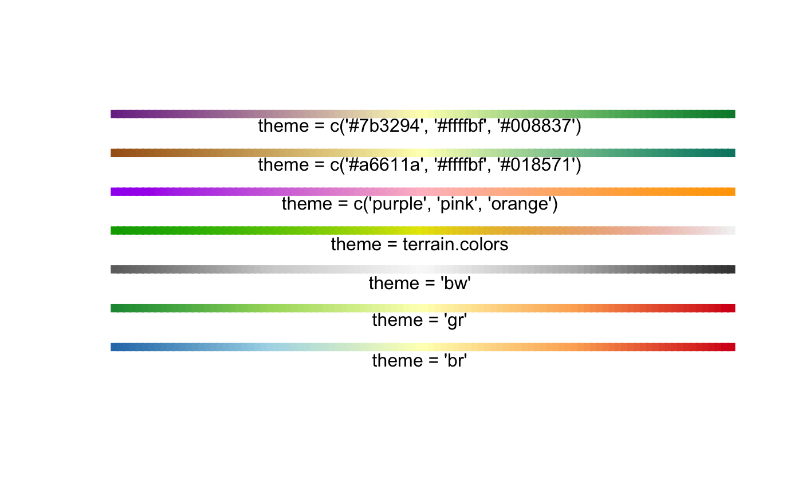
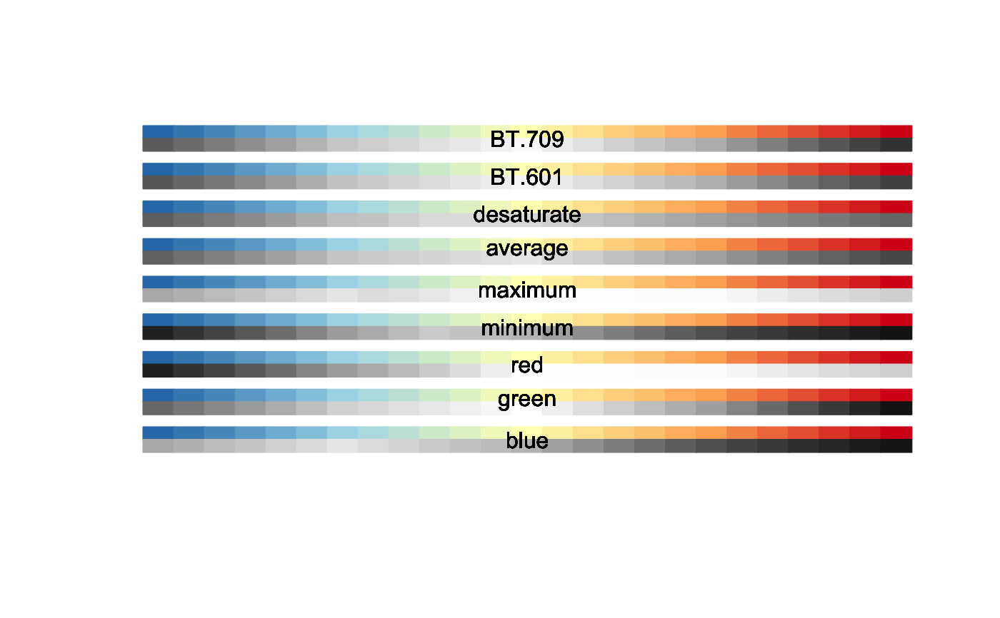

occolors.RdA convenient way of setting color palettes for the opticut package.
occolors(theme) col2gray(col, method="BT.709")
| theme | character value, character vector, or a function used to interpolate the colors.
The built-in values are |
|---|---|
| col | vector of color specification as described on the help page
for the |
| method | character, the method used for grayscale conversion. See Details. |
Grayscale conversion methods in col2gray calculate gray levels based on
red (R), green (G), and blue (B) color channels as follows:
"BT.709"0.2126 * R + 0.7152 * G + 0.0722 * B, luminosity correction following the ITU-R BT.709 recommendation;
"BT.601"0.299 * R + 0.587 * G + 0.114 * B, luminosity correction following the ITU-R BT.601 recommendation;
"desaturate"(max(R, G, B) + min(R, G, B)) / 2, also called lightness;
"average"(R + G + B) / 3;
"maximum"max(R, G, B);
"minimum"min(R, G, B);
"red"R;
"green"G;
"blue"B.
occolors returns a function, see colorRampPalette.
col2gray returns a vector of gray colors based on
the conversion method and gray.
colorRampPalette for a general description of palettes.
ocoptions for setting the color theme option in the
opticut package.
## using palettes plot(1:100, rep(2, 100), pch = 15, ylim = c(0, 21), axes = FALSE, ann = FALSE, col = occolors()(100)) # default 'bg'## grayscale conversions n <- 25 col <- occolors("br")(n) method <- c("BT.709", "BT.601", "desaturate", "average", "maximum", "minimum", "red", "green", "blue") plot(0, type="n", ann=FALSE, axes=FALSE, xlim=c(0, n), ylim=c(3*length(method), 0))for (j in 1:length(method)) { for (i in 1:n) { polygon(c(i-1, i, i, i-1), c(0, 0, 1, 1)+((j-1)*3), col=col[i], border=col[i]) polygon(c(i-1, i, i, i-1), c(1, 1, 2, 2)+((j-1)*3), col=col2gray(col[i], method=method[j]), border=col2gray(col[i], method=method[j])) text(n/2, 1+((j-1)*3), method[j]) } }